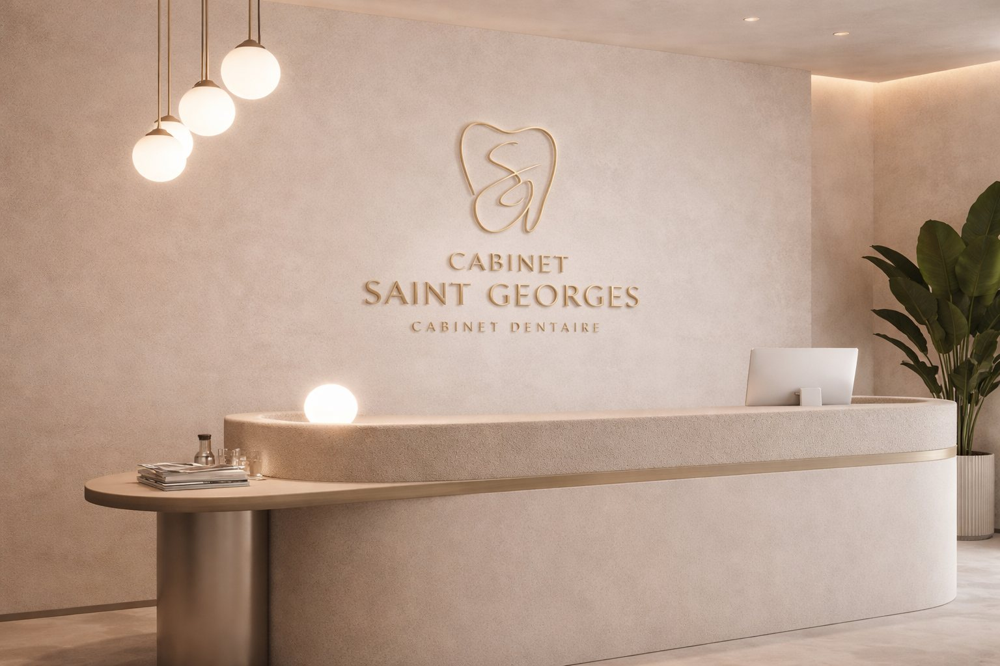
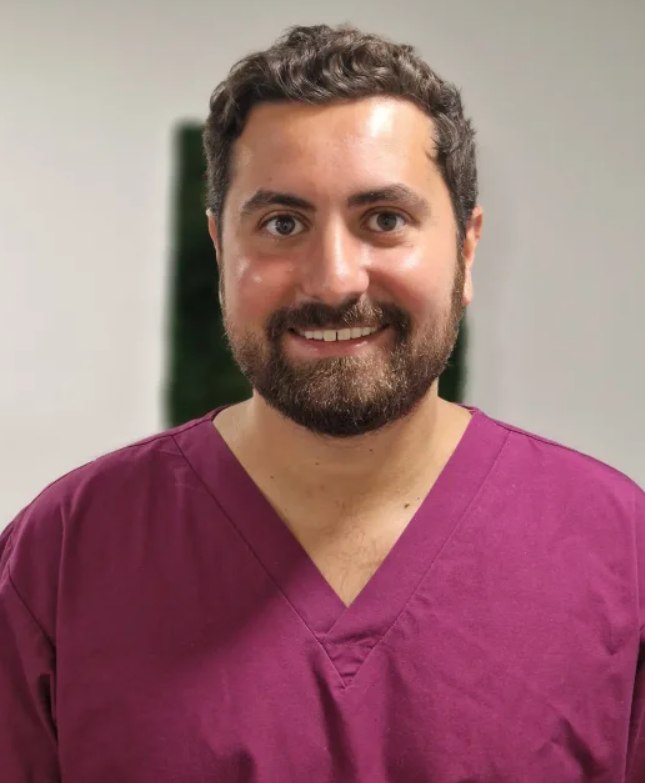

Cabinet Saint Georges
Cabinet dentaire à Saint-Georges-sur-Eure
Prendre rendez-vousLe Cabinet Saint Georges est un lieu conçu pour vous offrir une expérience dentaire personnalisée, dans un environnement chaleureux et rassurant.
Le Dr Raphaël Zafrany et son équipe proposent une approche ayant pour objectif la qualité des soins et le bien-être de chaque patient.
Le Cabinet Saint Georges s'engage à offrir une prise en charge globale, avec une expertise couvrant l'ensemble des soins dentaires, des traitements de routine aux interventions plus spécialisées.
Dans un cadre empreint de sérénité, notre équipe consacre tout son savoir-faire à la réalisation des actes de la dentisterie d'aujourd'hui, avec la même exigence de qualité à chaque rendez-vous.

Lors de votre premier rendez-vous, vous recevrez une attention personnalisée. Nous mettons en avant l'écoute, l'accompagnement et la confiance, pour vous offrir une expérience de soin sereine.
Chirurgien-dentiste, fondateur du Cabinet Saint Georges
Diplômé de l'Université de Paris, le Dr Raphaël Zafrany vous accueille au Cabinet Saint Georges avec une même exigence : offrir à chaque patient des soins précis, dans un cadre chaleureux et rassurant.
Je vous invite à découvrir le cabinet et son équipe, et à nous confier le soin de votre sourire.

Nos soins
Le cabinet couvre l'ensemble des soins dentaires, des traitements de routine aux interventions spécialisées.
Faites glisser ou cliquez sur une prestation


Élimination du tartre et de la plaque dentaire pour prévenir caries et maladies des gencives. Recommandé une à deux fois par an.
Infos pratiques
Réservez en ligne en quelques clics via notre plateforme Doctolib.
Prendre rendez-vous